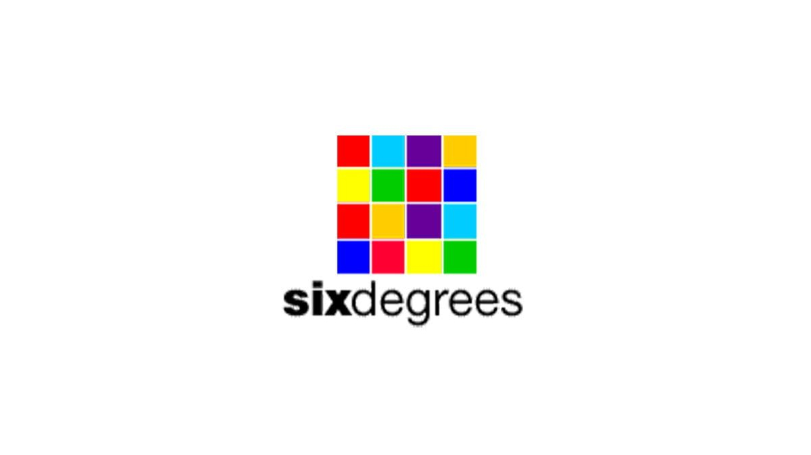

| ORIGEN DE LAS REDES SOCIALES |
|---|
| Pagina Principal |
|---|
|

Primera Red Social: La primera red social que ganó popularidad fue SixDegrees.com, lanzada en 1997. Permitía a los usuarios crear un perfil, agregar amigos, y navegar por la red de conexiones. |
EVOLUCION DE LAS REDES SOCIALES
| FRIENDSTER(2002) | MYSPACE(2003) | FACEBOOK(2004) |
|---|---|---|
Fue una de las primeras redes sociales en popularizarse globalmente. |
Dominó durante un tiempo, permitiendo a los usuarios personalizar perfiles y compartir música. |
Se convirtió en la red social más influyente, inicialmente limitada a estudiantes universitarios, y luego abierta a todos. |
| TWITTER(2006) | INSTAGRAM(2010) | TIKTOK(2016) |
|---|---|---|
Introdujo el concepto de microblogging, permitiendo a los usuarios publicar mensajes breves. |
Se centró en la fotografía y más tarde en los videos, ganando popularidad entre usuarios de todas las edades. |
Focalizada en videos cortos, ha alcanzado gran popularidad entre los más jóvenes. |